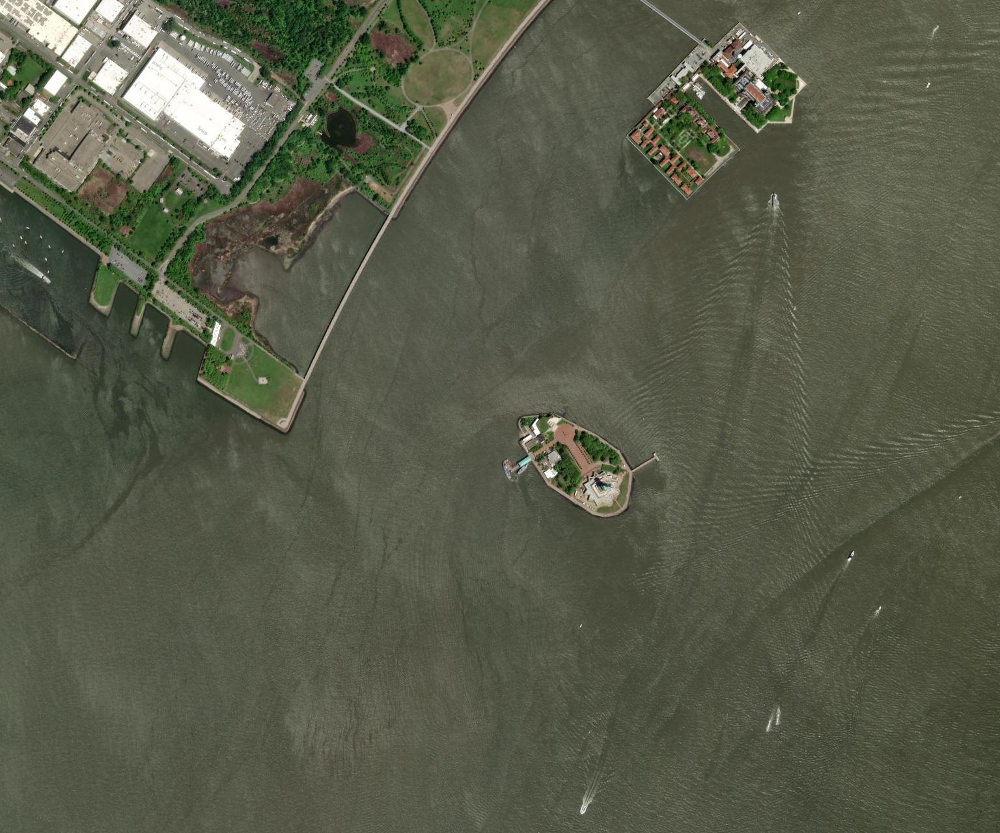

GEOSPATIAL INTELLIGENCE / WORKSPACE
Mission overview.
From orbit to insight. Define an area. Discover what’s there.
7.07 km²Selected search area
— tilesOverlapping image tiles
0 0 classesAcross the scanned area
—% Excludes unclassified features
LOCATION AT SCAN CENTER
Resolving location…
Area of operationsSAMPLE BASEMAP

+
SATELLITEChoose a location to scan
N↑
Building Unknown Vehicle Animal Person Agriculture
Sample view
Loading satellite imagery…
Imagery © Esri · Historical mosaic
Use Buildings and Unknown visual features to explore beyond vehicles. Archaeology searches image structure candidates and known mapped heritage separately. No detector identifies everything.
Detection intelligence 0
Model suggestions, unknown candidates, and your marked regions.
| DETECTION ID | OBJECT CLASS | CONFIDENCE ↓ | COORDINATES | EVIDENCE | REVIEW STATUS |
|---|
No scan results yet